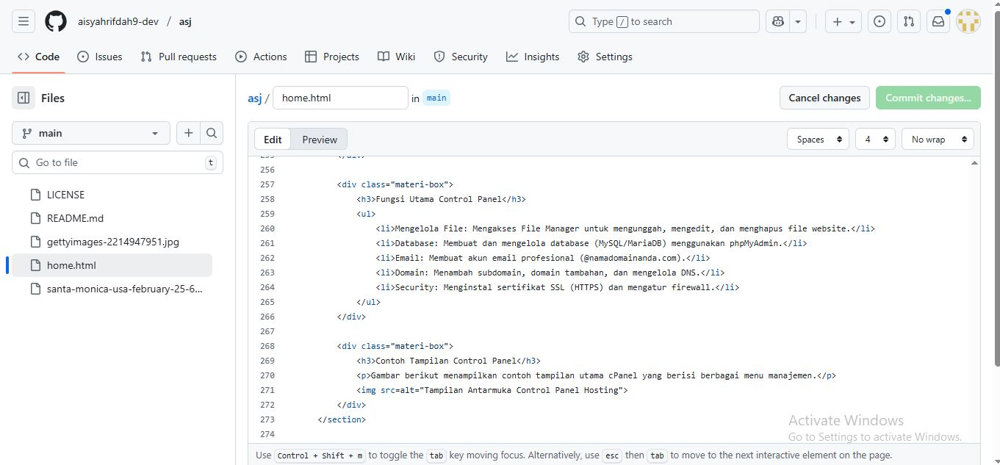
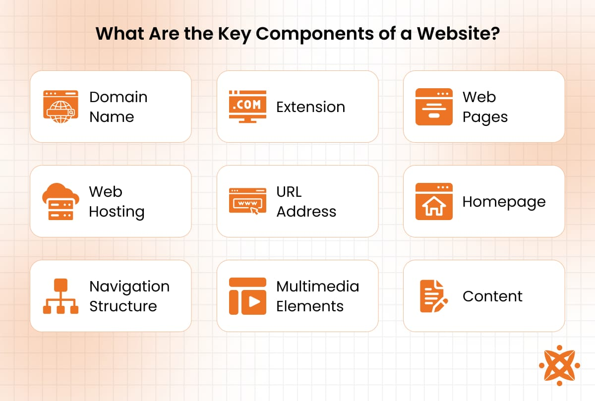
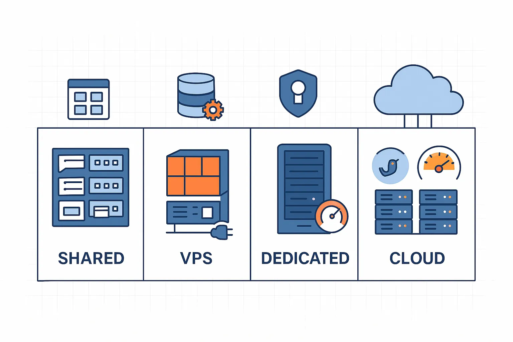

Profil Pribadi
Nama Lengkap:
Aisyah Rifdah
Kelas/Jurusan:
XII Teknik Komputer dan Jaringan D
Alamat:
Jl Saidan Rt02/09
Cita-Cita:
Pengusaha
Hobi:
Jalan-Jalan
Makanan Fav:
Pasta
Rangkuman Materi: Control Panel Hosting
Apa itu Control Panel?
Control Panel (cPanel, Plesk, dll.) adalah antarmuka berbasis web yang dirancang untuk menyederhanakan pengelolaan website dan server hosting. Panel ini memungkinkan pengguna untuk melakukan tugas-tugas kompleks tanpa perlu pengetahuan mendalam tentang baris perintah (CLI).
Fungsi Utama Control Panel
- Mengelola File: Mengakses File Manager untuk mengunggah, mengedit, dan menghapus file website.
- Database: Membuat dan mengelola database (MySQL/MariaDB) menggunakan phpMyAdmin.
- Email: Membuat akun email profesional (@namadomainanda.com).
- Domain: Menambah subdomain, domain tambahan, dan mengelola DNS.
- Security: Menginstal sertifikat SSL (HTTPS) dan mengatur firewall.
Contoh Tampilan Control Panel
Gambar berikut menampilkan contoh tampilan utama cPanel yang berisi berbagai menu manajemen.
Rangkuman Materi: Pengantar Hosting
Definisi Web Hosting
Web Hosting adalah layanan penyewaan ruang pada server agar website atau aplikasi web Anda dapat diakses melalui internet. Ibarat menyewa lahan parkir di gedung yang beroperasi 24/7, server hosting menyimpan semua file, gambar, dan database website Anda.
Komponen Dasar Hosting
Gambar berikut menampilkan komponen-komponen dari web hosting.
- Domain: Alamat unik website Anda (contoh: google.com).
- Server:Komputer fisik (atau virtual) yang menyimpan file hosting.
- Bandwidth: Batas transfer data yang diizinkan antara website dan pengunjung.
- Uptime:Persentase waktu server selalu aktif dan dapat diakses (ideal: 99.9%).
Jenis-Jenis Hosting
Ada beberapa jenis hosting utama yang wajib diketahui:
- Shared Hosting: Paling umum dan murah. Satu server digunakan bersama banyak pengguna (seperti kos-kosan).
- VPS (Virtual Private Server): Pembagian server fisik menjadi beberapa server virtual yang independen. Lebih stabil dan fleksibel (seperti apartemen).
- Dedicated Server:Menyewa seluruh server fisik hanya untuk satu pengguna. Kontrol penuh dan kinerja maksimal (seperti rumah pribadi).